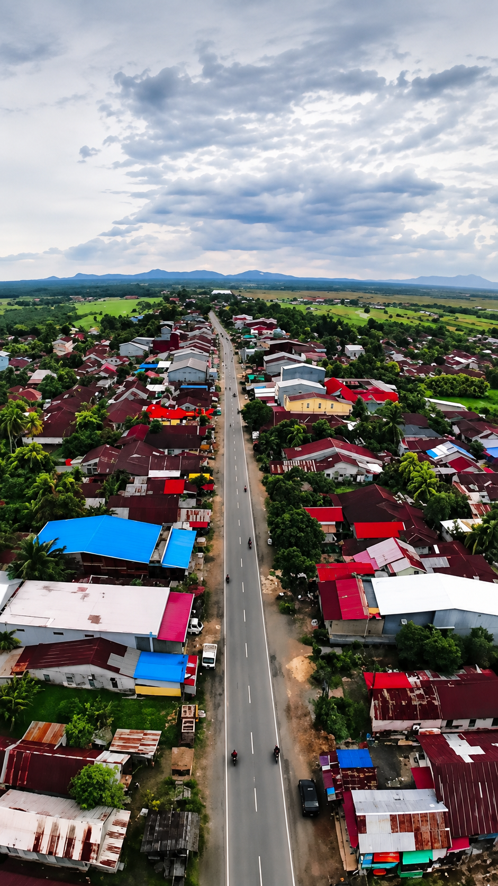
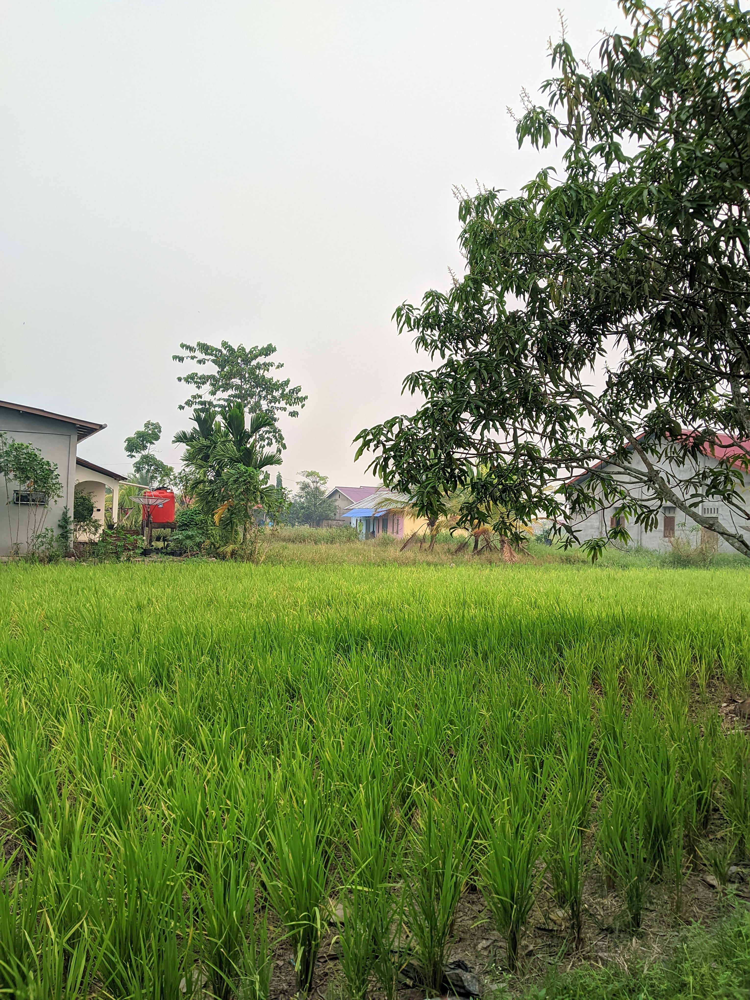
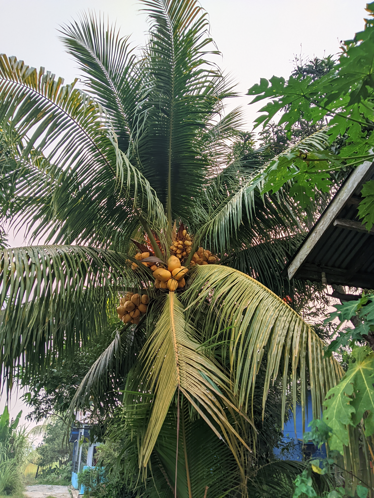
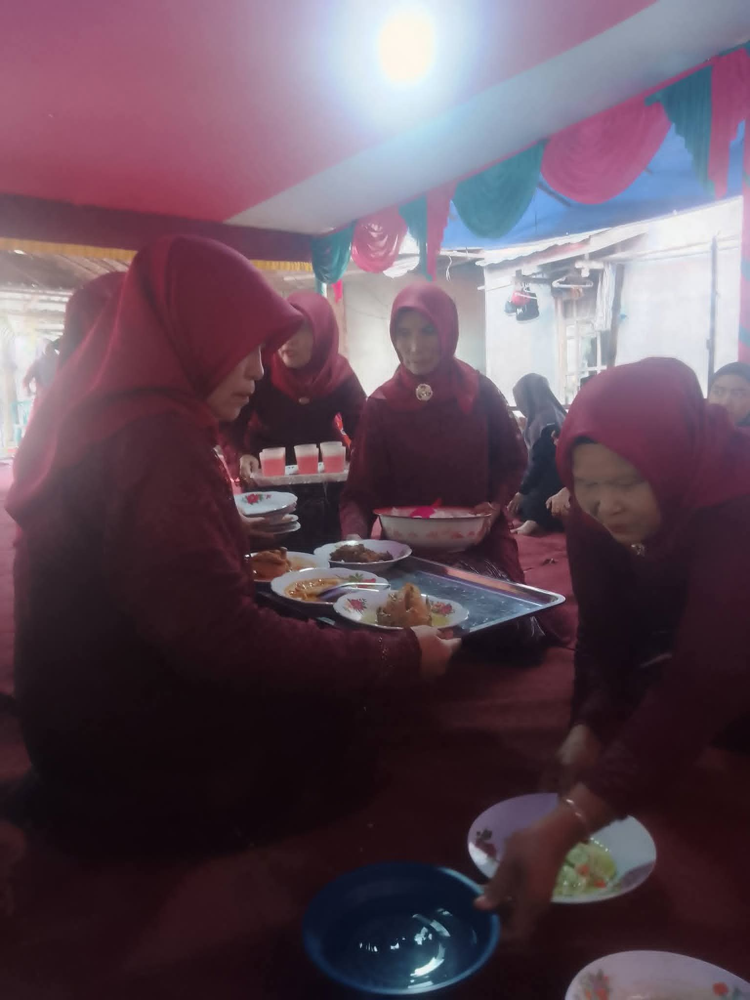
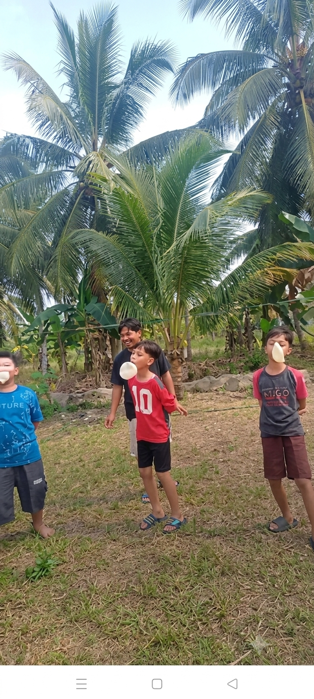
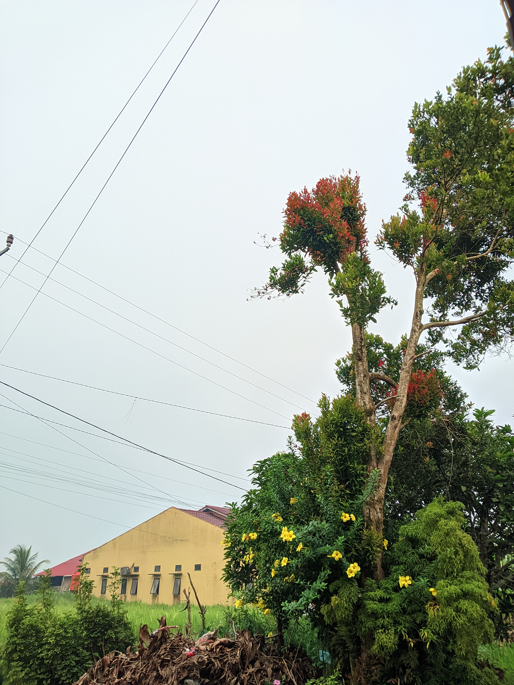
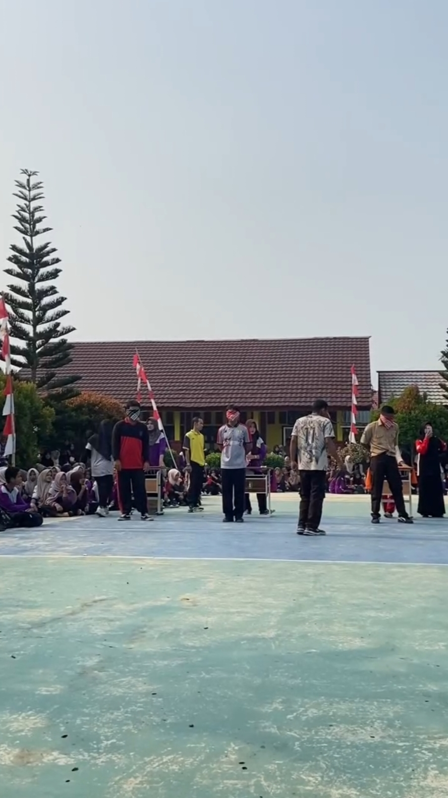
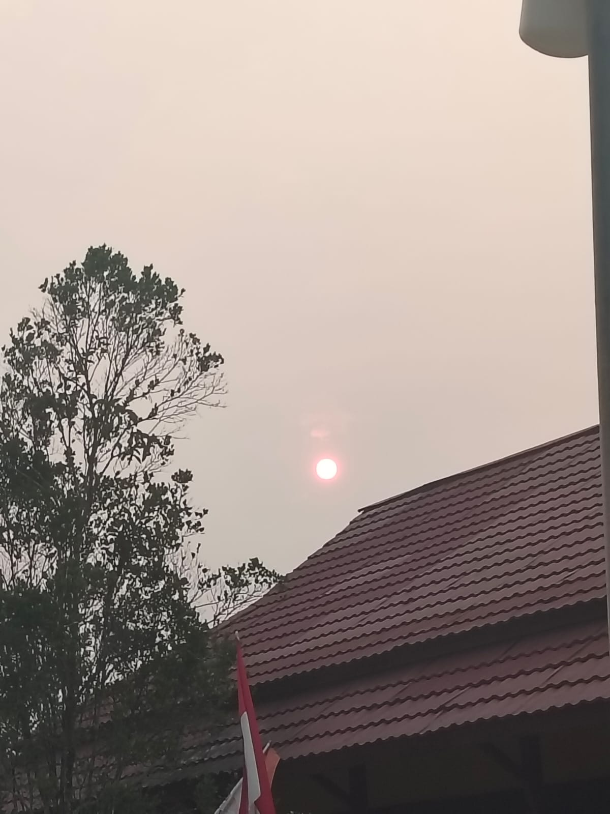

Desa yang tumbuh dari hasil bumi dan kearifan Melayu Sambas — merangkai pertanian, budaya, dan kehidupan warga dalam satu kampung halaman.
Sekilas tentang sumber penghidupan dan kekayaan yang dimiliki wilayah ini.

Sawah menjadi salah satu sumber penghidupan utama warga, sekaligus menjadi salah satu sektor pertanian yang diandalkan di Kabupaten Sambas.

Kelapa yang dikelola secara turun-temurun oleh warga di sela lahan pertanian.

Tradisi makan saprahan masih terus dijaga di tengah keseharian warga.



